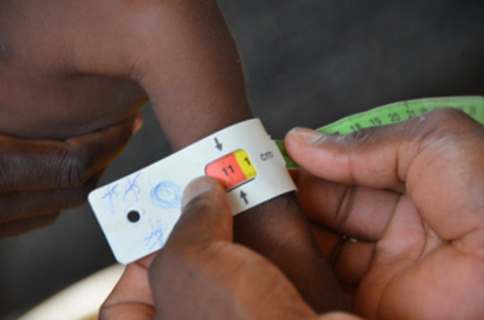
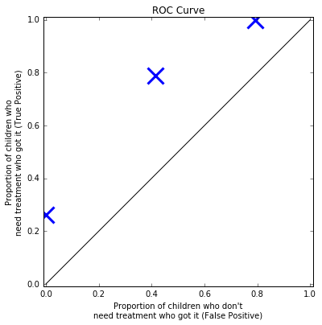
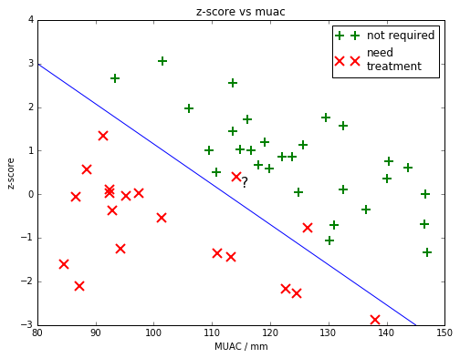
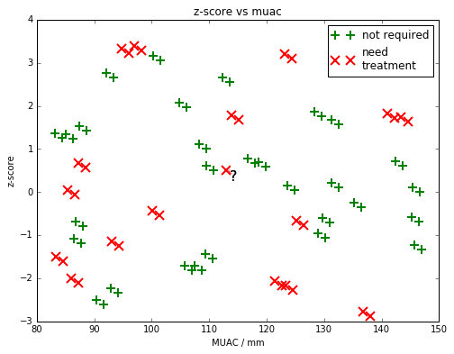

Classification?
Presented by Mike Smith
RA at the University of Sheffield
m.t.smith@sheffield.ac.uk
What is classification?
You have some training data. Each item consists of some values, and is of a known class (i.e. is labelled).
You want to classify new data that you don't know the class (label) of.
Because the data is labelled, this is an example of supervised learning.
Topics
- Example: Malnutrition
- Nearest neighbour vs decision boundary
- Cross validation (& correlation)
- Over-fitting
- Validation
- Feature selection example: Sickle Cell
- Imbalanced Data
- Detour: F-score (what is it?)
- Adversarial Examples
Acute Malnutrition Screening
 Need to assess who needs treatment.
In-patient care provided to those with Severe Acute Malnutrition (SAM).
How to decide who has SAM?
Acute Malnutrition Screening
Most common methods:
- Mid-upper arm circumference
- Weight-for-height z-score
Acute Malnutrition Screening

Acute Malnutrition Screening
 Which is best?
Which is best?
Researchers looked at outcomes of children presenting with different MUACs and z-scores.
Aim: Classify, based on MUAC, whether a child will recover without intervention.
e.g. Laillou, Arnaud, et al. "Optimal screening of children with acute malnutrition requires a change in current WHO guidelines as MUAC and WHZ identify different patient groups." PloS one 9.7 (2014): e101159.
MUAC (simulated) Dataset

SIMULATED data from 29 children who recovered without treatment and 19 who didn't
MUAC (simulated) Dataset


Where should we put the threshold to decide who to treat?
MUAC (simulated) Dataset


Is this a better threshold?
MUAC (simulated) Dataset


What about in the middle?
MUAC (simulated) Dataset
 We can keep plotting points on this graph, to generate a curve. This is called the "Receiver operating characteristic" (ROC) curve.
We can keep plotting points on this graph, to generate a curve. This is called the "Receiver operating characteristic" (ROC) curve.
We sometimes use this to compare classifiers - area under the curve.
Cost Matrix: What is the cost of a False Positive compared to the cost of a False Negative?
More data?
Use z-score instead?
We might be able to do better with our screening if we use the z-score data?

more data?
We might be able to do better with our screening if we combine the MUAC data with the z-score data

Which class do people think the ? child belongs in?
Nearest Neighbour
We could assign the class of the child's "nearest neighbour".
k-Nearest Neighbour
We could look at the class of the three nearest neighbours and pick the most common class.
Linear Boundary
We could draw a straight line to try to classify the children?
Other classifiers
 Many other types of classifier... (some are good for when there's more dimensions, or when inputs are correlated, or if there's more or less noise...)
Many other types of classifier... (some are good for when there's more dimensions, or when inputs are correlated, or if there's more or less noise...)
Leave-one-out cross-validation
 If we imagine our data is more random (like this). Could we still classify the children?
If we imagine our data is more random (like this). Could we still classify the children?
Leave-one-out cross-validation
 We could draw a complicated decision boundary (like this).
We could draw a complicated decision boundary (like this).
All training points are classified correctly, but...
...what about a new child?
Leave-one-out cross-validation
To test our classifier we need to divide the data up into TRAINING data and TEST data.
We normally do this by leaving out one item at a time.
Leave-one-out cross-validation
 Here we've left out one of the children from the training data. We can now TEST to see if the classifier got it correct. In this case it didn't.
Here we've left out one of the children from the training data. We can now TEST to see if the classifier got it correct. In this case it didn't.
Leave-one-out cross-validation
Leave-one-out cross-validation allows us to say how well our classifier will generalise to unknown data.
Warning note: When leaving 'one' out, you need to be careful to think about other correlated data. For example if each child had a twin, you might want to leave both twins out for the cross-validation.
Over-fitting
This decision boundary is an example of over-fitting.
Our 'model' is overly complicated and describes the noise, rather than the underlying structure.
Validation
There might be many parameters we can adjust in our model (something you'll see shortly). For example the number of neighbours, or the curviness of our decision boundary.
We could keep fiddling with these parameters (this could even be done automatically) until we get a good result on our training set...
...does that seem 'honest'?
Validation
Once you've finished adjusting the model (using the training and test sets), use a validation dataset, that you'd not used yet for anything else.

Feature Selection
Typically, as a ML-expert, you'll be given a set of data and will need to decide which parts of the data will be useful to answer a problem...
Usually requires, looking at the data and discussion with the domain-experts.
Often depends on the quality and biases in the collected data
Sickle Cells

Example problem: Count the number of sickle cells
What features of the cells would be useful?
i.e. which features are "invariant".
Example Extracted Features
| Circumference (pixels) | Average pixel value | Area (pixels${}^2$) | Sickle? (manually labelled) | |
|---|---|---|---|---|
| 45 | 72 | 201 | Yes | |
| 62 | 51 | 340 | No | |
| 30 | 36 | 85 | Yes | |
| 55 | 65 | 126 | Yes | |
| 50 | 62 | 125 | No |
These could be fed into one of the classifiers discussed. Also see Scale Invariant Feature Transforms (SIFTs).
Manual feature selection vs deep models...
The example was of classifying images, something the CNN community have worked on considerably. Does the CNN learn the features itself? [is this data efficient?]
Many (most?) problems benefit still from feature engineering. Maybe one could localise the cells first and then run the DNN on each one, rather than the whole slide?
Can include expert knowledge (e.g. we might want to hide features that might differ in future tests - data shift)
Other issues: Imbalanced Data
"I have a binary classification problem and one class is present with 60:1 ratio in my training set. I used the logistic regression and the result seems to just ignores one class."
https://machinelearningmastery.com/tactics-to-combat-imbalanced-classes-in-your-machine-learning-dataset/
Don't just report 'accuracy'! Also Area under the curve ROC isn't ideal if imbalanced. Use F-score? Or even better a confusion matrix.
Some classifiers need balanced training data. Could resample to even up class sizes (or use additional synthetic data). Some classifiers let you penalise one type of mistake more.
Detour: F-score
 The F-score gives a description of a classifier's accuracy combining both the precision and recall.
The F-score gives a description of a classifier's accuracy combining both the precision and recall.
Example: 100 cells were tested.
25 were really sickle. The classifier found 20 of these.
It also identified 30 of the non-sickle as sickle.
What is the Precision (detected true positives/all detected positives)?
What is the Recall (detected true positives/all real positives)?
Image from wikipedia
Detour: F-score
What is the Precision (detected true positives/all detected positives)?
20/50 = 0.4
What is the Recall (detected true positives/all real positives)?
20/25 = 0.8
$\text{F-score} = (\frac{\text{recall}^{-1} + \text{precision}^{-1}}{2})^{-1}$
$[(2.5 + 1.25)/2]^{-1} = 0.53$
Issue: weights precision and recall equally.
Adversarial Examples
We take an image and add some carefully crafted noise.
Dog becomes ostrich
Note: Noise image scaled by 10x
Szegedy, et al. 2014 (original paper describing AEs)
Uh oh...

Note: These are examples of 'test-time' attacks (we're altering the test image not the training data)
Fischer, 2017
Normal DNN training
- Take an image and compute the class scores using a function which has millions of parameters.
- For each parameter find how much it changes the output scores (the gradient of a cost fn wrt each weight).
- Change weights to make correct class have higher score.
- Repeat lots and lots of times.

based on http://karpathy.github.io/2015/03/30/breaking-convnets/
Creating Adversarial Example
- Take an image and compute the class scores.
- For each input find how much it changes the output scores (the gradient of the score wrt each input).
- Change inputs to make correct class have lower score.
based on http://karpathy.github.io/2015/03/30/breaking-convnets/
The noise must be crafted, e.g. Fawzi, 2015 show the difference between random noise and an adversarial example.
Methods for creating AEs
Jacobian Saliency Map algorithm - JSMA
 Maximally perturb the feature (pixel) with greatest gradient (wrt class) [Papernot, 2016].
Maximally perturb the feature (pixel) with greatest gradient (wrt class) [Papernot, 2016].
They find they modify about 4% of pixels in MNIST to produce AEs.
Others
Attack specific L-Norm. Carlini, 2017: Good overview - basically the last two are just different norms.
Fast Gradient Sign Method. Changes all pixels simultaneously, but by either $\pm\epsilon$.
Black Box. Papernot 2017, train a DNN on the classifications of a black-box classifier. AEs produced on their new emulation worked against the target (e.g. Amazon and Google's image recognition systems).
Blackbox+Genetic Algorithm. Su et al., 2017: single pixels. I'm not clear why we can't just check each pixel?
Transferability
 Adversarial Sample created on row ML-technique and then they were tested on the column technique.
Adversarial Sample created on row ML-technique and then they were tested on the column technique.
Papernot 2016
Universal Adversarial Examples

Moosavi-Dezfooli, 2016
Printing!
Alexey, 2016
Video Road Signs!
Evtimov, 2017 (published?)
Why does it happen?
Originally people suggested 'overfitting', but it may be more to do with the linear nature of the classifier.

Goodfellow, 2014
Defences Proposed
Various ideas:
- Bradshaw et al. 2017 suggest adding a GP as a final layer.
- Training on a set of adversarial examples to detect them (e.g. Grosse et al. 2017)
- Feature selection (Zhang, 2016, Xu 2017). Also JPG compression (Dzuigaite, 2016).
- Mess with activation functions, etc etc
Summary
- Classification is supervised learning.
- Example: Malnutrition (MUAC/z-score)
- Nearest neighbour vs decision boundary
- Cross validation (be careful with correlated training data)
- Over-fitting
- Validation
- Feature selection example: Sickle Cell
- Imbalanced Data
- Detour: F-score
- Adversarial Examples